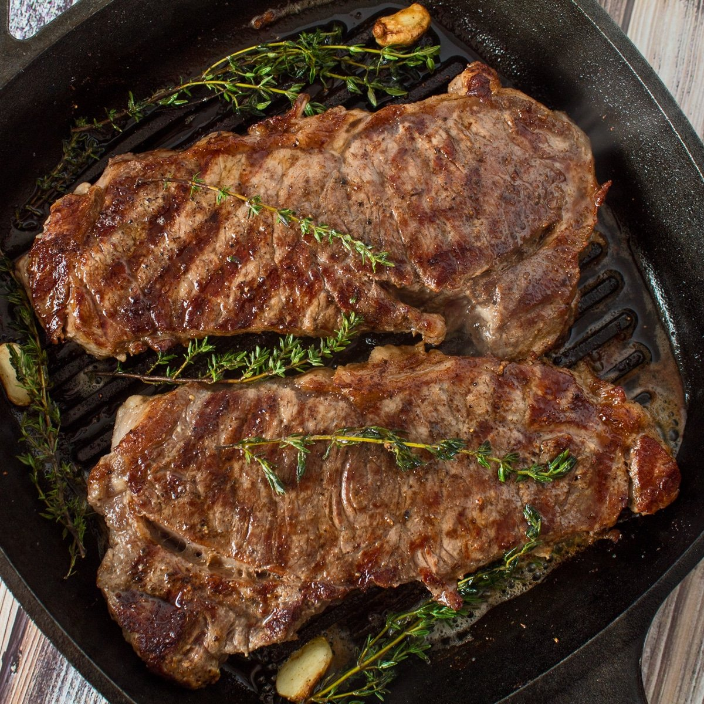

Air Fryer Steak
Description
Delicious steak usually requires either a weeks worth of salary or can be a hell of a
daunting task. What if I told you that an air fryer can relieve all your problems when cooking the
perfect steak?
This recipe will leave your kitchen spotless, allow you to cook the perfetly seared steak without the smoke
filling up your kitchen, and give you extra time to make the perfect Air fryer fries
Ingredients
- 4 tbsp. butter, softened
- 2 cloves garlic, minced
- 2 tsp. freshly chopped parsley
- 1 tsp. freshly chopped chives
- 1 tsp. freshly chopped thyme
- 1 tsp. freshly chopped rosemary
- 1 (2 lb.) bone-in ribeye
- Kosher salt
- Freshly ground black pepper
Directions
- In a small bowl, combine butter and herbs. Place in center of a piece of plastic wrap and roll into a log.
Twist ends together to keep tight and refrigerate until hardened, 20 minutes.
- Season steak on both sides with salt and pepper.
- Place steak in basket of air fryer and cook at 400° for 12 to 14 minutes, for medium, depending on thickness of steak, flipping halfway through.
- Top steak with a slice of herb butter to serve.
Enjoy!

Return to main page!